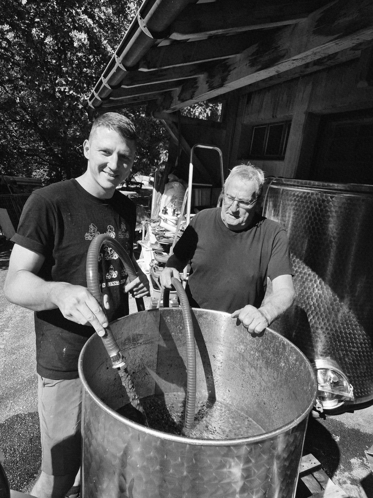
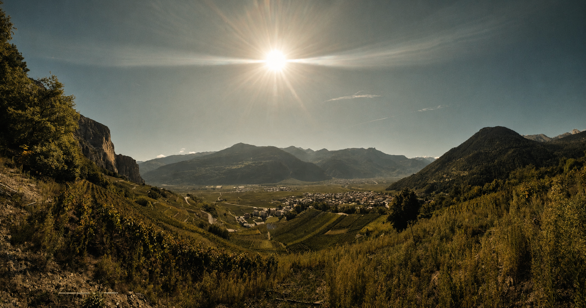
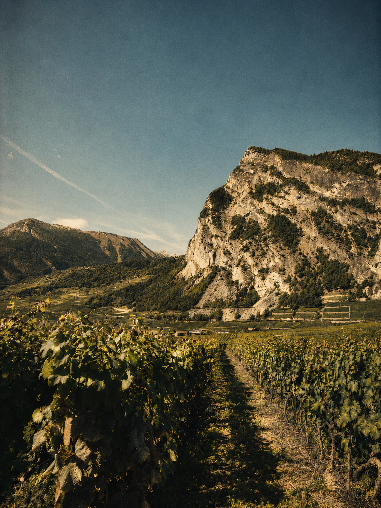
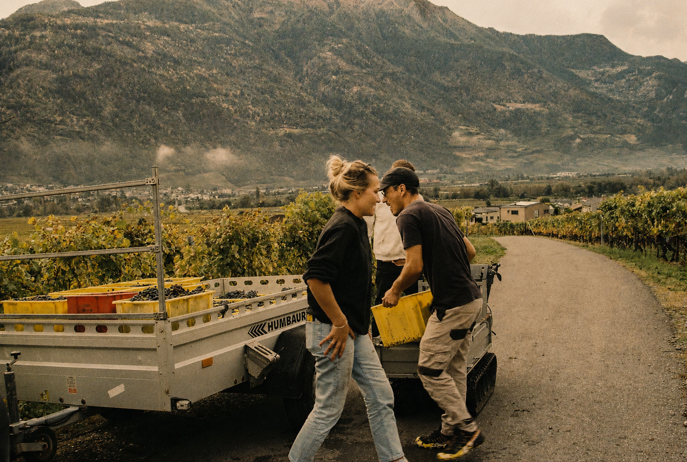
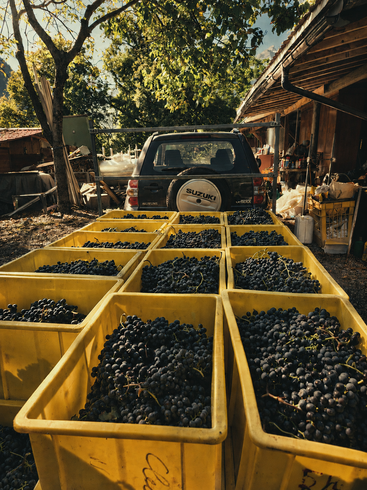
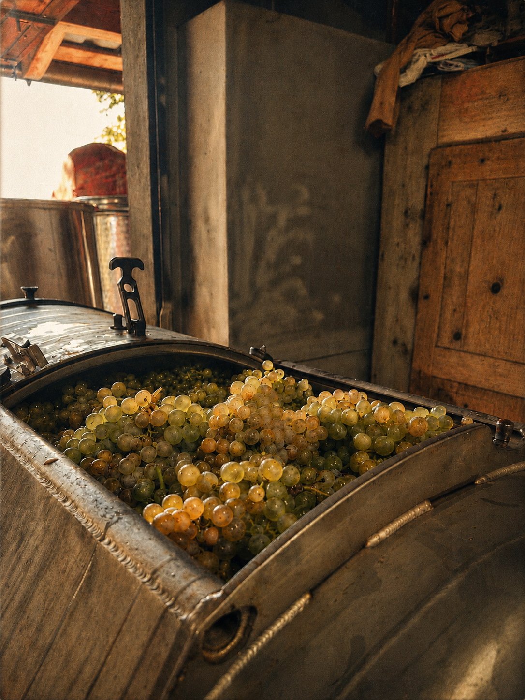
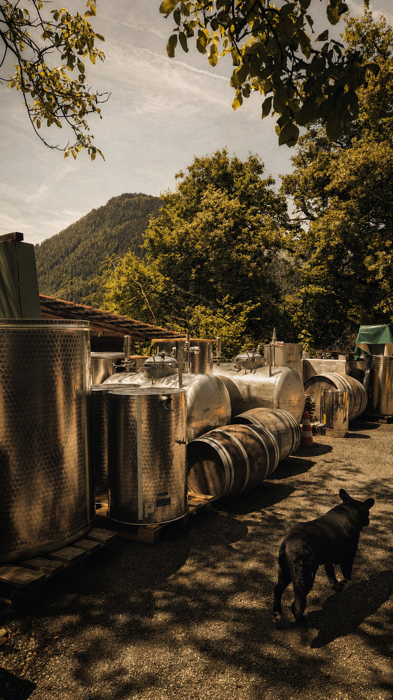

Notre histoire
Un savoir-faire
transmis de père en fils.

La Cave Cleusix est une aventure familiale portée par un père, un fils et une fille, unis par la même passion de la vigne et du vin.
Situé au cœur du Valais, notre domaine cultive ses parcelles avec respect et authenticité, afin de proposer des vins qui reflètent la richesse de notre terroir et le savoir-faire transmis de génération en génération.
Chaque bouteille raconte une histoire : celle de notre famille, de nos vignes et de notre terre.
Dans les vignes, chaque geste est une histoire de famille
Jean-Michel Cleusix, passionné de viticulture depuis toujours, a transmis son savoir-faire et son amour de la terre à son fils Victor.
Ensemble, ils cultivent et vinifient avec exigence et respect du terroir. Chaque vendange, chaque barrique est le fruit de cette complicité entre générations, où la tradition se marie à la jeunesse et à l’innovation.
« C’est ce lien unique, entre père et fils, qui donne à nos vins leur authenticité et leur âme. »
Jean-Michel & Victor Cleusix





